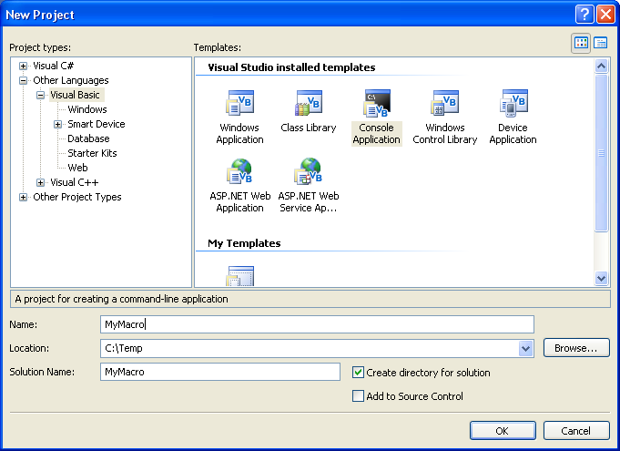
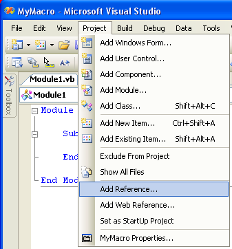
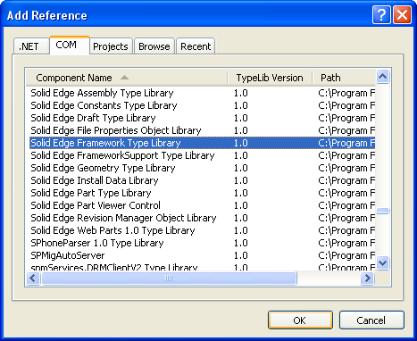
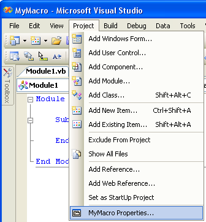
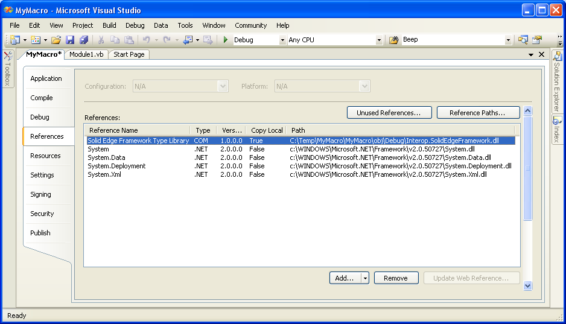
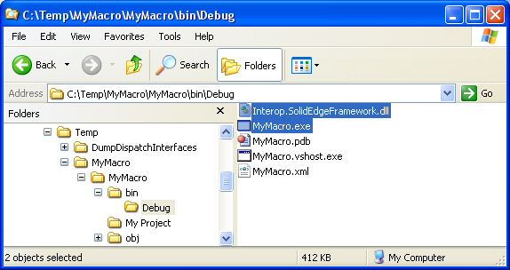

Create a new Visual Basic .NET project
Microsoft Visual Studio offers many different templates for different project types. Depending on your needs, the template that you choose will vary. If you simply want to automate Solid Edge without any user interaction, the Console Application template generally works well.

This creates an empty console application project that you can use to begin your work.
Adding a reference to the Solid Edge API
Before you can start working with the Solid Edge API, you'll need to add a reference to the type libraries that you'll be using. You can begin by selecting Project -> Add Reference from the main menu in Visual Studio.

The Add Reference dialog window will appear. You will first need to click the COM tab. Scroll down until you get to the Solid Edge Type Libraries. Select the Solid Edge Framework Type Library as shown below.

Visual Basic 6.0 users will immediately recognize this as a step they've had to do in the past. While the steps appear similar, the actual details of what's going on under the hood are quite different. Because Visual Basic 6.0 was written to be a COM programming language, it could reference existing COM Type Libraries directly.
When you add a COM reference in .NET, Visual Studio actually calls a Type Library Importer program that generates an "Interop Assembly" for your project to use. This also means that your executable will be dependent upon the generated Interop Assembly. If you plan on deploying your application to users, you'll need to be sure to include any Interop Assemblies that you've generated for your project.
Viewing Interop Assembly References
Now that you know how to add Solid Edge API support to your project, let's see how you can view your project's dependencies, specifically Interop Assemblies. Select Project -> (Project Name) Properties from the main menu in Visual Studio.

Once the project properties appear, select the References tab. Here you can see the Interop Assembly, Interop.SolidEdgeFramework.dll, that the Type Library Importer created for your project. Your executable is dependent upon the references that you see in this window.

For generated Interop Assemblies like the Interop.SolidEdgeFramework.dll, they will have the "Copy Local" flag set to True. This means that these .dll's will be placed in the projects output folder when you build the project.

See Also